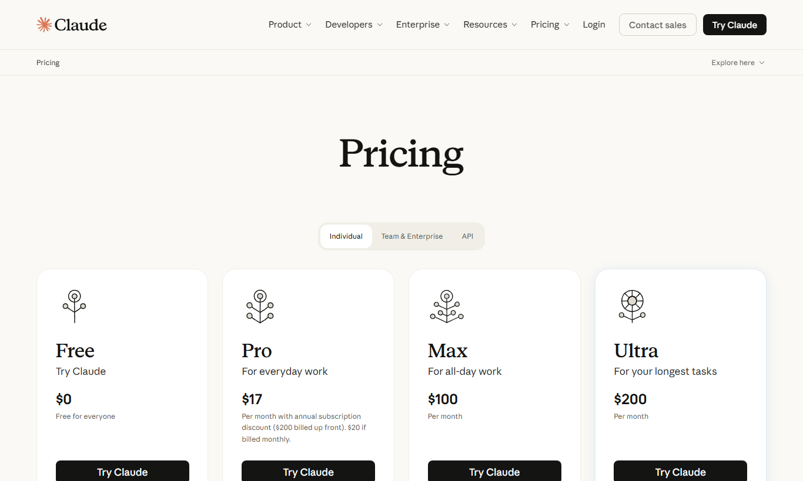
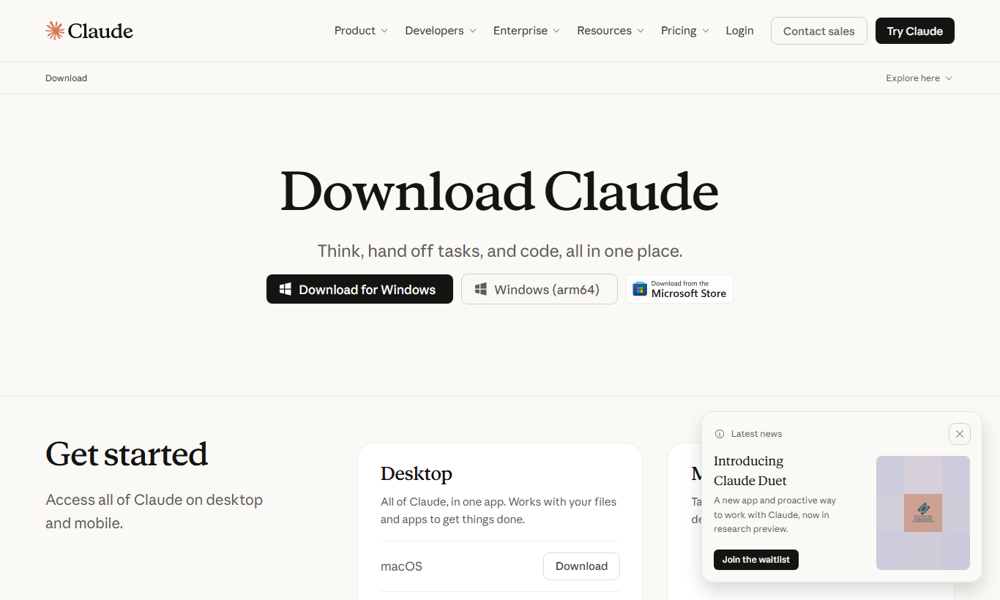
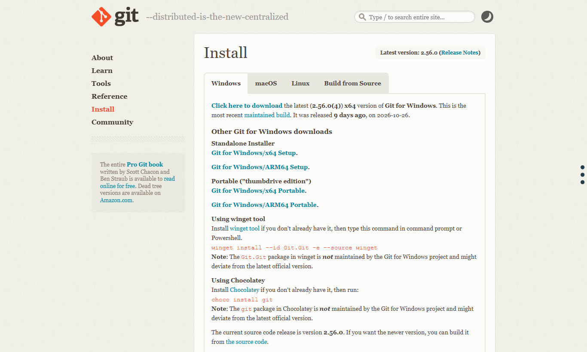
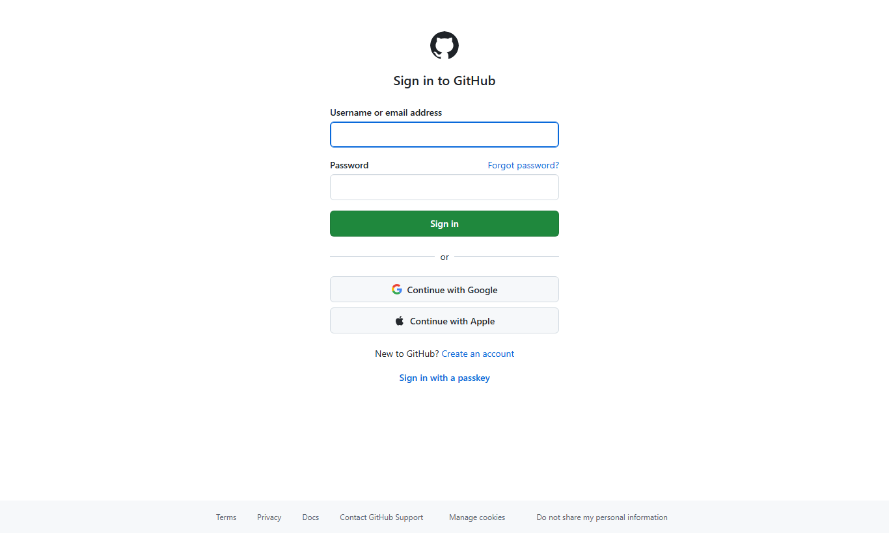
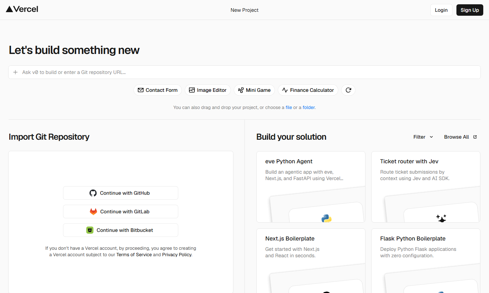

תבדוק אם Git מותקן אצלי ותגיד לי מה מצב התיקייה
Git מותקן (גרסה 2.56). התיקייה עדיין ריקה ולא מחוברת לריפו. רוצה שאחבר אותה ל-GitHub?
מה נבנה היום?
📁 my-business-site
כל מה שעשינו בסשן, צעד אחרי צעד: אילו אתרים פתחנו, מה התקנו, איך חיברנו את Claude ל-GitHub, איך מעלים אתר לאוויר, ואיך כותבים פרומפט ראשון לאתר לעסק שלכם.
זו כל הרשימה. כדאי לסמן כל שורה לפני שממשיכים.
עם חיבור אינטרנט והרשאה להתקין תוכנות. Claude Code עובד על המחשב עצמו, ולכן אי אפשר להשתמש בו מהטלפון בלבד.
Claude Code לא כלול בתוכנית החינמית. צריך מנוי Pro לפחות. מנוי Max נותן יותר שימוש.
מורידים אותה מהאתר הרשמי. Claude Code נמצא בה בלשונית Code.
התוכנה ששומרת גרסאות של הקבצים ומעלה אותם ל-GitHub.
המקום באינטרנט שבו נשמר הקוד של האתר, וממנו הוא עולה לאוויר.
השירות שמפרסם את האתר בכתובת אמיתית. נרשמים אליו עם חשבון ה-GitHub.
למשל my-business.co.il. בלי דומיין האתר יקבל כתובת חינמית של Vercel.
לוגו, תמונות, טקסטים ופרטי התקשרות. ככל שיש יותר חומר, האתר הראשון יוצא קרוב יותר למה שאתם רוצים.
כך החלקים מתחברים. Claude כותב את האתר על המחשב, GitHub שומר אותו, ו-Vercel מציג אותו לעולם.
דף שפותחים: claude.com/pricing

1דף שפותחים: claude.com/download

1דף שפותחים: git-scm.com/downloads/win

1Git רושם את השם שלכם על כל שמירה. אפשר לבקש מ-Claude לעשות את זה, או להריץ בעצמכם בטרמינל:
דפים שפותחים: github.com ואז github.com/new

1ריפו הוא "תיקייה בענן" לפרויקט אחד. לכל אתר פותחים ריפו משלו.
בתוך אפליקציית Claude, בלשונית Code.
את החיבור עושים דרך Claude עצמו, עם הכתובת שהעתקתם בשלב 4.
| מה כותבים ל-Claude | מה קורה |
|---|---|
| "תעלה את השינויים לגיט" | שומר את כל מה שהשתנה ומעלה ל-GitHub. אם האתר מחובר ל-Vercel, הוא מתעדכן לבד. |
| "אל תעלה כלום לגיט עד שאגיד" | Claude יעבוד רק על המחשב. מומלץ לכתוב את זה בתחילת עבודה על משהו שעוד לא מוכן. |
| "מה השתנה מאז ההעלאה האחרונה?" | מקבלים סיכום של השינויים שעוד לא עלו. |
| "תחזיר את האתר למצב של אתמול" | Git שומר היסטוריה, ולכן אפשר לחזור לגרסה קודמת. |
דף שפותחים: vercel.com/new

1הפרומפט הראשון קובע את הכיוון של כל האתר. כמה דקות של הכנה חוסכות הרבה תיקונים אחר כך.
| נושא | מה לכתוב | דוגמה |
|---|---|---|
| מי העסק | שם, תחום, מה מוכרים או נותנים | "סטודיו לפילאטיס בחיפה" |
| למי האתר מיועד | קהל היעד ומה חשוב לו | "נשים 30–55, מחפשות שיעורים קטנים" |
| מטרת האתר | מה הגולש צריך לעשות בסוף | "להשאיר פרטים לשיעור ניסיון" |
| דפים ואזורים | רשימת החלקים באתר | ראשי, אודות, שירותים, המלצות, צור קשר |
| שפה עיצובית | צבעים, תחושה, לוגו, אתרים שאהבתם | "פסטל רך, נקי, הרבה אוויר" |
| טון כתיבה | איך מדברים אל הגולש | "חם ואישי, לא רשמי" |
| תוכן אמיתי | טקסטים, מחירים, טלפון, כתובת, שעות | "טלפון 050-0000000, וואטסאפ זמין" |
| פיצ'רים | טופס, כפתור וואטסאפ, גלריה, מפה | "כפתור וואטסאפ צף בצד" |
| דרישות טכניות | עברית, מימין לשמאל, מותאם לנייד | "קודם כול נראה טוב בטלפון" |
מעתיקים, מחליפים את החלקים הכתומים, ושולחים ל-Claude Code בתיקייה של הפרויקט.
דוגמה ממולאת
| מונח | מה זה אומר בפשטות |
|---|---|
| Claude Code | Claude שעובד ישירות על הקבצים במחשב: כותב קוד, מריץ פקודות ובודק את התוצאה. |
| Git | תוכנה ששומרת היסטוריה של כל שינוי בקבצים, כמו "שמירה בשם" חכמה. |
| GitHub | אתר שבו נשמרים פרויקטים של Git בענן. |
| ריפו (Repository) | תיקיית פרויקט אחת ב-GitHub. |
| Commit | נקודת שמירה עם תיאור קצר של מה השתנה. |
| Push | העלאה של השמירות מהמחשב ל-GitHub. |
| Branch / main | ענף של הפרויקט. main הוא הענף הראשי, וממנו האתר עולה לאוויר. |
| Vercel | שירות שלוקח את הריפו מ-GitHub ומציג אותו כאתר בכתובת אמיתית. |
| Deploy | פרסום גרסה של האתר לאוויר. |
| דומיין / DNS | כתובת האתר (למשל my-business.co.il), וההגדרות שמפנות אותה ל-Vercel. |
| מה קורה | מה עושים |
|---|---|
| לשונית Code לא נפתחת או מבקשת שדרוג | המנוי הוא Free. צריך לשדרג ל-Pro ב-claude.com/pricing ולהתחבר מחדש. |
| Claude אומר ש-Git לא מותקן | מתקינים מ-git-scm.com, סוגרים את אפליקציית Claude לגמרי ופותחים אותה מחדש. |
| ההעלאה נכשלת עם שגיאת הרשאה | מבקשים מ-Claude לנסות שוב. כשייפתח חלון GitHub, מתחברים לחשבון הנכון. |
| שגיאה על קבצים שכבר קיימים בריפו | כנראה סימנתם README ביצירת הריפו. מבקשים מ-Claude: "תסנכרן עם הריפו ותעלה שוב". |
| האתר ב-Vercel לא התעדכן | בודקים ב-GitHub שהשינוי עלה, ואז נכנסים ללשונית Deployments ב-Vercel לראות אם יש שגיאה. |
| משהו עלה בטעות | כותבים ל-Claude: "תבטל את ההעלאה האחרונה". Git שומר את הגרסה הקודמת. |
| אתר חסום בסינון (למשל נטפרי) | מבקשים מספק הסינון לפתוח את הכתובות claude.com, github.com, git-scm.com ו-vercel.com. |